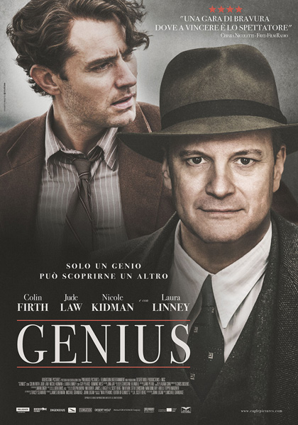

The Tragedy of Macbeth (2021)
Overview
Coen's stark, shadowy take on Macbeth's murderous ambition drips with dread. Washington and McDormand slay, but the minimalist style feels cold to some.
Shakespearean adaptations, literary icons, classic novel interpretations, and stories celebrating the power of language and storytelling.
Films bringing the Bard's timeless tales to the screen with flair or grit.
Coen's stark, shadowy take on Macbeth's murderous ambition drips with dread. Washington and McDormand slay, but the minimalist style feels cold to some.

A fictionalized Bard finds muse in a forbidden romance, weaving Romeo and Juliet. Witty and lush, but some call its Oscar win overblown fluff.

Luhrmann's neon-drenched, modern Verona pulses with young love and violence. DiCaprio and Danes spark, but the frenetic style and dated MTV vibe jar some.
Stories of authors or their creative struggles, real or imagined.

A neurotic screenwriter battles to adapt a book while his twin thrives. Kaufman's meta-genius dazzles, but its quirky chaos confuses mainstream audiences.

War journalist Marie Colvin risks all for truth in conflict zones. Pike's fierce performance grips, but formulaic biopic beats and rushed pacing soften impact.

Editor Max Perkins shapes the works of literary giants like Wolfe. Strong cast intrigues, but stuffy pacing and shallow depth make it a dry read.

A writer's stolen manuscript brings fame and guilt in a nested tale. Ambitious ideas intrigue, but convoluted structure and weak payoff bore most.
Big-screen takes on literary masterpieces, for better or worse.

Luhrmann's glitzy Jazz Age spectacle drowns Fitzgerald's tragedy in excess. DiCaprio shines, but shallow depth and overblown style alienate purists.
Films celebrating the power of words, competition, or self-expression.

A maverick teacher inspires prep school boys to seize the day through poetry. Williams' passion uplifts, but sentimental tropes and tidy arcs feel dated.

A shy girl from South L.A. conquers the spelling bee circuit. Heartwarming and earnest, but predictable underdog clichés blunt its scrabble.

A bitter adult exploits a loophole to dominate kids' spelling bees. Bateman's dark humor bites, but uneven tone and thin stakes misspell its potential.
Dark tales weaving literature into mystery or obsession.

A man's obsession with a book and the number 23 unravels his sanity. Carrey's dramatic turn tries, but silly twists and convoluted plotting flunk the thriller test.